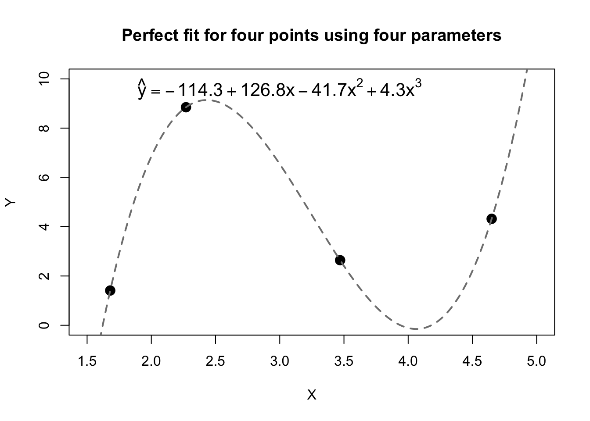

Code
set.seed(3141)
junk <- as.data.frame(matrix(rnorm(1100),ncol=11))
names(junk) <- c('Y',sapply(LETTERS[1:10],function(z) paste('Column',z)))
round(summary(lm(Y~.,junk))$coefficients[,c(1,4)],3)We have studied several ways to add predictors to the model: multiple linear regression, regression with multi-level factors, interaction terms, and further feature engineering. Now we shall learn ways to remove predictors from the model: how to know which predictors belong and which are superfluous; when and why a smaller and less powerful model might be considered better than a larger model that explains more variance. The process of finding the “right” set of predictors for a response variable is called model selection.
First, we must discuss why we would ever want to remove terms from a model, or choose not to use potential predictors in the first place. After all, every new predictor increases our model explanatory power, parameter likelihood, and R2, and reduces the sum of squared errors.1
But as has been said by economists and science fiction authors, “there ain’t no such thing as a free lunch” (TANSTAAFL). We pay a price for every new predictor added to the model, and at some point the price we pay exceeds the explanatory value we gain. In fact, we can pay several different prices.
As we add more and more predictors to our model, we expand our “model space” (the subspace containing all the possible predictor vectors \(\hat{\boldsymbol{y}}\), for every possible choice of betas) by more and more dimensions. In theory, the new predictors give us access to new dimensions which in turn allow us to create predictor vectors closer and closer to \(\boldsymbol{y}\). Generally, though, we see diminishing returns: our first few predictors capture the majority of \(\boldsymbol{y}\)’s variance, while the later predictors contribute less and less to R2.2
As each new predictor “sucks out” some part of the explainable variance of \(\boldsymbol{y}\) into the model sum of squares, the unexplainable error term \(\boldsymbol{\varepsilon}\) comprises more and more of the model’s residual variance. Once we’ve built a reasonably complete model, any new predictors we add are likely correlated by chance alone with \(\boldsymbol{\varepsilon}\) more than they are with the remaining explainable variance of \(\boldsymbol{y}\). We call this phenomenon spurious correlation.
Since these unnecessary predictors appear to explain \(\boldsymbol{y}\), we wrongly include them in our “story” of what causes \(Y\) to be large or small. We also wrongly use these predictors to forecast future values of \(Y\) when really they only helped to explain the specific set of errors found in our sample, and not any other errors in the future.
Consider the following thought experiment: generate eleven columns of 100 standard normal variates, with every observation generated independently from each other. Call the first column \(Y\) and call the remaining ten columns predictors \(A\)–\(J\). Clearly, there are no real relationships between any of these columns (or rows, for that matter). The data contain nothing but random noise, simple “static”. And yet, if you carried out this experiment and regressed \(Y\) on the predictors \(A\)–\(J\), in nearly 40% of trials you would find at least one predictor significant at a 5% level:
set.seed(3141)
junk <- as.data.frame(matrix(rnorm(1100),ncol=11))
names(junk) <- c('Y',sapply(LETTERS[1:10],function(z) paste('Column',z)))
round(summary(lm(Y~.,junk))$coefficients[,c(1,4)],3)| Parameter | Estimate | p-Value |
|---|---|---|
| Intercept | -0.017 | 0.870 |
| Column A | 0.200 | 0.066 |
| Column B | -0.090 | 0.395 |
| Column C | -0.214 | 0.018 |
| Column D | 0.000 | 0.997 |
| Column E | 0.038 | 0.719 |
| Column F | -0.015 | 0.879 |
| Column G | 0.075 | 0.432 |
| Column H | 0.115 | 0.215 |
| Column I | -0.028 | 0.770 |
| Column J | 0.079 | 0.392 |
The table above shows an example of such an experiment. The data are generated randomly, and repeated instances of this experiment would yield different results. But you can see that some of the “junk” columns were not correlated at all with \(\boldsymbol{y}\), some of the junk columns were weakly correlated with \(\boldsymbol{y}\), and one column (C) was so strongly correlated with \(\boldsymbol{y}\) by chance alone that the model flagged it as a significant predictor. There are no real connections to learn from such data! We are only chasing ghosts.
Throughout the previous sections I have maintained that the least squares (and/or maximum likelihood) estimators for the betas are unbiased. These estimated slopes will almost always be wrong, but neither too low nor too high. Such statements, I’m afraid, require an important caveat.
OLS regression models the response vector \(\boldsymbol{y}\) by projecting it into a subspace formed by the vector of ones along with all of our predictors \(\boldsymbol{x}_1,\boldsymbol{x}_2,\ldots,\boldsymbol{x}_k\). When all of our predictors are orthogonal (uncorrelated), we can uniquely decompose the model sum of squares SSM into sum-of-squares components contributed by each predictor. In fact, we can add and remove any of the predictors without changing the estimate (beta-hat) or the significance of the remaining parameters.
However, when the predictors are correlated with each other, their parameter estimates become extremely sensitive to small changes in the data. We call this phenomenon multicollinearity and say that one or more predictors are collinear with each other. Recall the “hat matrix” from which we derive the parameter estimates:
\[\hat{\boldsymbol{\beta}} = (\mathbf{X}^T\mathbf{X})^{-1}\mathbf{X}^T\boldsymbol{y}\]
You can see that estimating the betas requires us to invert the predictor cross-products \(\mathbf{X}^T\mathbf{X}\). Inverting a matrix is not always possible. In particular, we can only invert a matrix which is full rank (i.e. where the rows and columns are linearly independent). If the predictors are truly and fully collinear, then we cannot even estimate betas at all.
Serious problems remain even when the predictors are only mostly collinear. The inverted matrix \((\mathbf{X}^T\mathbf{X})^{-1}\) will be extremely sensitive to the slight idiosyncratic errors in our data, and so the estimates \(\hat{\boldsymbol{\beta}}\) will vary wildly depending on these specific errors. While the estimates will remain technically unbiased, their variance will be so large that any single regression will likely find estimates for the beta-hats which are very far away from the true values.
The exact amount of this distortion will depend on many factors, including sample size, the amount of correlation between the predictors, and the relative size of the error variance. But as one example, consider the iris measurement data described earlier. We could choose to predict the petal length of each flower either (i) using petal width, or sepal length, or sepal width alone, or (ii) using petal width, and sepal length, and sepal width together. See how their estimated betas change:
summary(lm(Petal.Length~Petal.Width,iris))$coefficients
summary(lm(Petal.Length~Sepal.Length,iris))$coefficients
summary(lm(Petal.Length~Sepal.Width,iris))$coefficients
summary(lm(Petal.Length~Petal.Width+Sepal.Length+Sepal.Width,iris))$coefficientsApproach (i): Three simple regressions
| Predictor | Parameter estimate |
|---|---|
| Petal width | 2.23 |
| Sepal length | 1.86 |
| Sepal width | -1.74 |
Approach (ii): One multiple regression
| Predictor | Parameter estimate |
|---|---|
| Petal width | 1.44 |
| Sepal length | 0.73 |
| Sepal width | -0.65 |
Which is it? Should a one-unit increase in petal length lead us to expect a 2.23-unit increase in petal width, or a 1.44-unit increase? We cannot say. When our predictors are partly collinear, adding them both to the model may help reveal certain nuanced relationships and at the same time distort the true coefficients. We cannot easily untangle these effects.
Despite this troubling new vulnerability for our modeling, I should reassure the reader that multicollinearity will not affect the overall explanatory power of the model: the fitted values, the total R2, the error variance, etc. Multicollinearity only affects our interpretation of individual coefficients.
Even if the predictors are not highly correlated with the response variable \(Y\), or the other predictors, or the idiosyncratic errors, by adding enough predictors we can always guarantee a perfect or near-perfect model fit.
Consider polynomial curves. As you likely learned many years ago, any two points uniquely define a line of the form \(y=a+bx\). Said differently, with two free parameters \(a\) and \(b\) to choose as we wish, we can always perfectly fit any two pairs \((x_1,y_1)\) and \((x_2,y_2)\). We may also have learned to extend this rule: any three points define a parabola between them, a quadratic curve of the form \(y=a+bx+cx^2\). And any four points can be fit by a cubic equation with four free parameters, as illustrated by the figure below. These points were chosen randomly from uniform distributions: they have no true connection to each other. But with enough terms, we can create a perfect “model” for \(\boldsymbol{y}\):
set.seed(1414)
overfitting <- round(data.frame(x=10*runif(4),y=10*runif(4)),2)
overfitting.lm <-lm(y~x+I(x^2)+I(x^3),overfitting)
plot(overfitting$x,overfitting$y,pch=19,cex=1.5,
main='Perfect fit for four points using four parameters',
ylab='Y',xlab='X',xlim=c(1.5,5),ylim=c(0,10))
lines(seq(1,5,0.01),predict(overfitting.lm,data.frame(x=seq(1,5,0.01))),
lty=2,lwd=2,col='grey50')
text(x=3,y=9.6,cex=1.3,
labels=expression(hat(y)==-114.3+126.8*x-41.7*x^2+4.3*x^3))
The same principles hold true for regression analysis (and parametric inference more broadly). With \(n\) freely-varying parameters, we can always create a perfect fit for \(n\) data points. Moreover, as the number of parameters comes close to \(n\), our model performance will grow very close to perfect even if the predictors contain no real information about \(Y\). The predictors are no longer driving the explanatory power of the model; rather, our explanatory power reflects the enormous range of prediction vectors \(\hat{\boldsymbol{y}}\) made possible by all the different choices of weights for our many betas.
Not only do we gain a false sense of explanatory power, but the statistical properties of our estimators will worsen even as the raw model fit improves. The “error degrees of freedom” of our model equals \(n-k-1\). We use this number to choose the t distribution to test our parameters, the F distribution which tests our entire model, adjusted R2 (which we shall learn shortly), and the ANOVA tests which compare our model to other candidates. As \(k\) becomes close to \(n\), this number shrinks and we lose precision in our estimates, calculate wider confidence intervals, and are generally less sure of the knowledge the model purports to provide.
In extreme cases, using too many predictors will simply break our regression model:
When we add predictors that are perfectly collinear (either with a single existing predictor, or with a combination of multiple existing predictors), then the hat matrix cannot be estimated since \(\mathbf{X}^T \mathbf{X}\) will not be full-rank, and thus singular. Modern software often automatically identifies an arbitrary set of fully collinear predictors and removes all but one of them, or assigns parameter estimates but not significances.
When we use at least as many predictors as we have observations (\(k \ge n\)), the model becomes overdetermined. Multiple sets of estimated betas \(\hat{\boldsymbol{\beta}}\) will perfectly fit the data, and so no single result can be reported. Modern software usually exits the regression routine with an error condition in such situations.